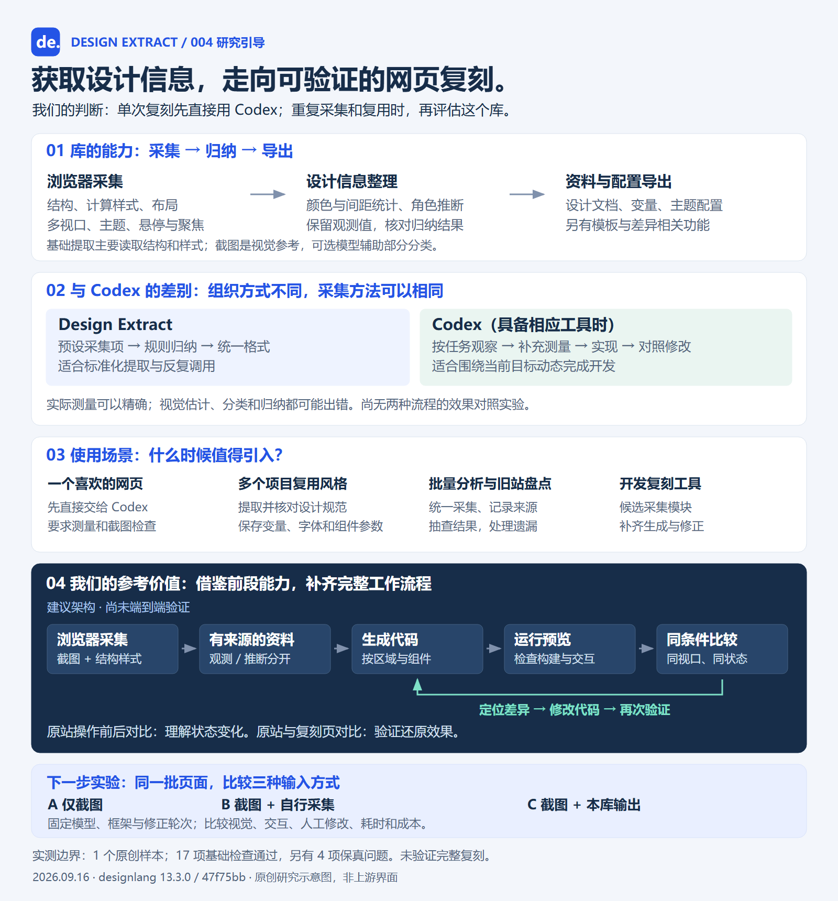

{kind=link}
读取浏览器里的页面
采集颜色、字体、间距、布局；观察不同视口、明暗模式、悬停与聚焦的变化。
从网页提取配色、字体、间距、布局与部分交互状态，导出设计文档和主题配置。对我们，它为批量分析参考站、复用设计规范和构建网页复刻工具提供采集模块与工程参考；完整复刻仍需生成、运行、对比与修正。
基础提取主要读取结构和样式。截图提供视觉参考，可选模型辅助部分分类。
采集颜色、字体、间距、布局；观察不同视口、明暗模式、悬停与聚焦的变化。
统计、聚类并推断主色和间距尺度。必须区分实际观测、含义推断与新生成的数据。
输出设计文档、变量和主题配置；另有模板与差异相关功能。导出文件不代表完整还原网站。
获取数据可以使用相同方法。差别在工作组织、输出形式，以及是否继续运行和修改。
| 比较项 | 直接用 Codex | Design Extract |
|---|---|---|
| 怎么做 | 根据任务选择观察、测量和实现步骤 | 按预先实现的采集、分类与导出流程执行 |
| 获取信息 | 有对应工具时，可查看截图、结构和样式 | 封装浏览器采集，生成统一设计对象 |
| 主要产物 | 当前任务的代码和页面 | 设计资料与主题配置；另有页面模板 |
| 复用方式 | 保存文档、组件、脚本或 Skill | 通过 CLI / API / MCP 重复调用 |
| 准确性 | 实际测量可精确；估计和推断可能出错 | 原始读数可精确；整理过程也会误判 |
这里描述具备相应工具时的可观察工作流程，不是对未公开模型内部机制的断言，也不保证每次任务自动执行全部步骤。OpenAI 工作流参考 ↗
只看截图可能估错；实际读取样式可以得到 24px。我们实测中，库读到了这个值，却在归纳尺度时遗漏了它。
决定准确度的是测量、信息保留和复验。引入库本身不保证更准确。
“点击后再获取信息”属于状态探索；“生成后对照原站”属于复刻验证。
理解悬停、聚焦、主题和尺寸变化。菜单展开、弹窗和任意业务流程，还需要补充探索与验证。
在相同视口与状态下比较外观和行为，定位差异、修改代码，再检查。已有差异命令不等于完成全部流程。
单次开发先直接做；当采集和整理反复出现时，再评估工具的收益。
要求观察参考页、读取关键参数、实现后对照截图。加一道提取步骤未必更省事；我们没有验证这个库能提升单次复刻效果。
只有截图时，URL 采集流程不能直接使用。已有完整设计规范时，优先沿用现有组件和变量。后台接口、权限和真实业务需要另行实现。
建议先做单页、桌面与手机布局、少量常见交互，交付源码、预览和差异报告。
发现差异 → 定位原因 → 修改代码 → 再次验证
Design Extract 可作为前段采集与整理模块。完整系统还要能解释哪里不同、改哪里，以及修改后是否改善。
| 技术方向 | 候选方案 | 用途 |
|---|---|---|
| 采集 | Playwright + Chromium | 结构、样式、截图和状态采样 |
| 整理 | 自定义资料格式 + 可选 Design Extract | 保留观测、推断与来源 |
| 生成 | 视觉与编码模型；第一版固定前端框架 | 按区域和组件实现 |
| 比较 | Playwright / pixelmatch + 模型辅助解释 | 定位视觉差异；另外验证交互 |
| 探索 | 固定操作脚本；后续研究 Stagehand | 逐步扩大交互覆盖 |
固定模型、框架、素材条件和最大修正轮次，比较视觉差异、交互检查、人工修改量、耗时和成本。目前没有证据证明 C 一定更好。

只在单个受控样本验证过上游提取；没有开展外部生产站测试、完整复刻或方案效率对比。架构和三组实验是后续建议。下载含完整来源的文档 →
{kind=link}